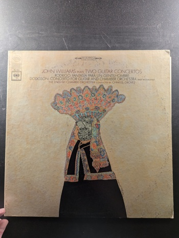

The Guitar Artistry of John Williams
John Williams
Everest 3219

Britten: Songs from the Chinese / Dodgson: Four Poems of John Clare / Dowland: Pieces for Solo Guitar
John Williams, Wilfred Brown
Odyssey 32 16 0220
Two Guitar Concertos
John Williams
Columbia ML 6151
Duo
Itzhak Perlman & John Williams
Columbia Masterworks 34508
Sor: 20 Studies For Guitar
John Williams
Westminster Gold WGS-8137
Villa Lobos: Five Preludes / Scarlatti: Sonatas
John Williams
Columbia Masterworks 34198
Two Favorite Guitar Concertos
John Williams / Eugene Ormandy
Columbia ML 6278
The Guitar and I
Andrés Segovia
Decca Gold Label DL 710179
Boccherini-Cassadó: Concerto for Guitar and Orchestra in E Major / Bach: Suite No. 3
Segovia
MCA Records MCA-2525
Castles of Spain
Segovia
Decca DL 710171
The Guitar and I (Vol. II)
Andrés Segovia
Decca DL-710182
an Andrés Segovia program
Andrés Segovia
Decca DL 9647
Mexicana
Segovia
Decca DL 710145
Three Centuries of the Guitar
Segovia
Decca Gold Label Records DL 710034
Platero and I / Sonata Romántica
Segovia
Decca Gold Label Records DL 710093
The EMI Recordings 1927-39
Andrés Segovia
Angel S-36896
Previn: Guitar Concerto - Ponce: Concierto del Sur
John Williams - André Previn
Columbia Masterworks M 31963
John Williams Plays Music of Agustin Barrios Mangore
John Williams
Columbia Masterworks M 35145
Virtuoso Variations for Guitar
John Williams
Columbia MS 7115
The Guitar Is The Song
John Williams
CRS 37825
Changes
John Williams
Columbia PC 31092

Columbia Records presents John Williams
John Williams
Columbia Records MS 6808
Plays Spanish Music
John Williams
Columbia Masterworks MS 6454
Plays Guitar Music from England Japan Brazil Venezuela Argentina & Mexico
John Williams
Columbia Masterworks M 35128
{kind=link}

{kind=link}
{kind=link}
{kind=link}
{kind=link}
{kind=link}
{kind=link}
{kind=link}
{kind=link}
{kind=link}
{kind=link}
{kind=link}
{kind=link}
{kind=link}
{kind=link}
{kind=link}
{kind=link}
{kind=link}
{kind=link}
{kind=link}

{kind=link}
{kind=link}